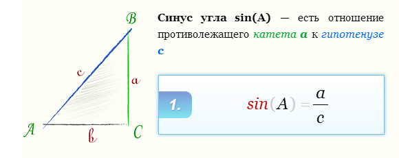
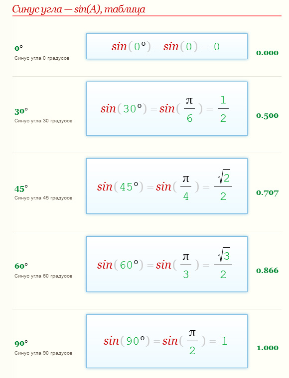

|
|
СинусСинусом угла называется отношение противолежащего катета (т.е. стороны, располагающейся напротив нужного угла) к гипотенузе. Запомните, что ни синус, ни косинус не может быть больше единицы! Почему? Потому что гипотенузы- это по умолчанию самая длинная сторона прямоугольного треугольника. Каким бы длинным не был бы катет, он будет короче гипотенузы, а значит, их отношения всегда будет меньше единицы. Таким образом, если у вас в ответе к задаче получился синус или косинус со значением, большим, чем 1, ищите ошибку в расчетах или рассуждениях.   |